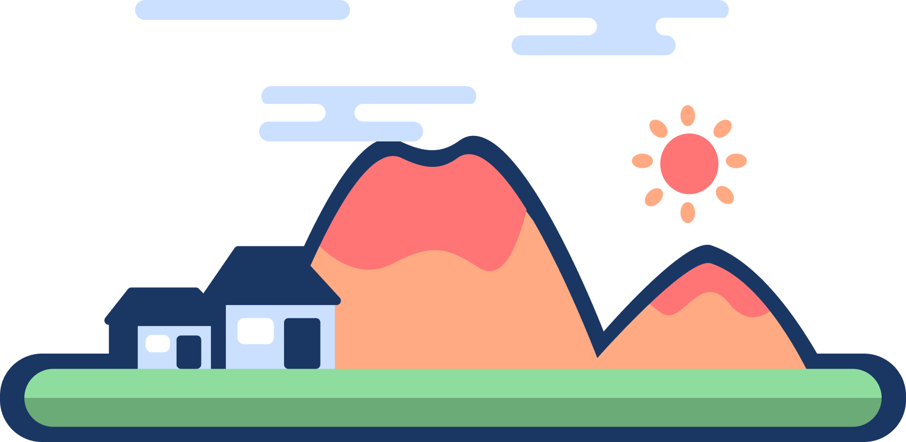

Beneath the smooth ocean surface extends an underwater landscape as complex as anything you might find on land.
Plate tectonics and the ocean floor
The shifting plates may collide (converge), move away (diverge) or slide past (transform) each other. As plates converge, one plate may move under the other causing earthquakes, forming volcanoes, or creating deep ocean trenches. Where plates diverge from each other, molten magma flows upward between the plates, forming mid-ocean ridges, underwater volcanoes, hydrothermal vents, and new ocean floor crust.

Nearby, you can see some people playing and swimming. Maybe you should join them!
Starting from land, a trip across an ocean basin along the seafloor would begin with crossing the continental shelf.
The continental shelf is an area of relatively shallow water, usually less than a few hundred feet deep, that surrounds land. It is narrow or nearly nonexistent in some places;
in others...
dive deep~
dive deep~
dive deep~
it extends for hundreds of miles.
dive deep~
dive deep~
dive deep~
Abyssal plains
Sunlight does not penetrate to the sea floor, making these deep, dark ecosystems less productive than those along the continental shelf.
..Lets turn on the lights, shall we?
Abyssal plains
But despite their name, these “plains” are not uniformly flat. They are interrupted by features like hills, valleys, and seamounts (underwater mountains that are also hotspots for biodiversity).